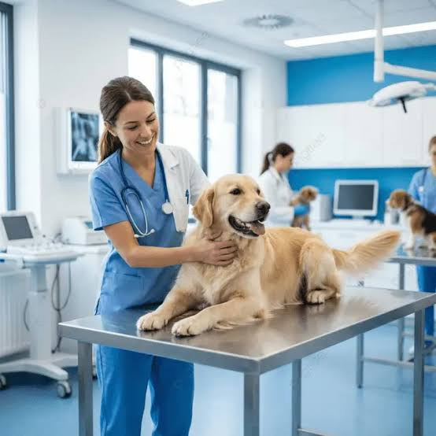
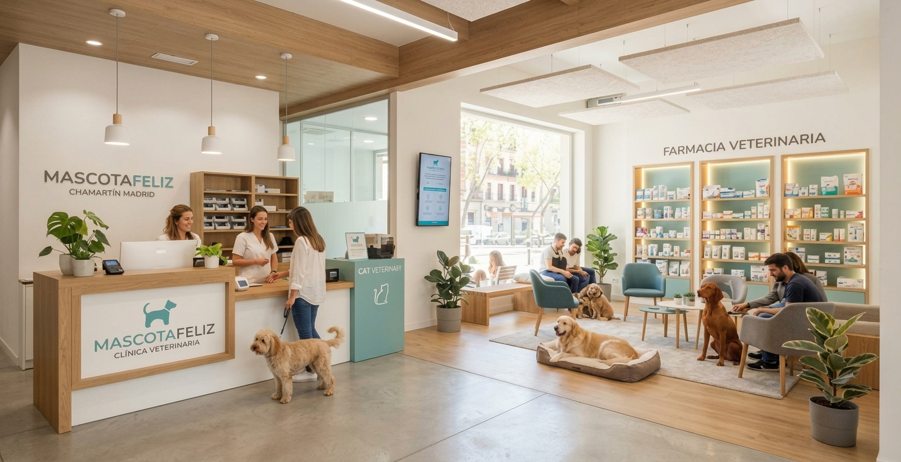
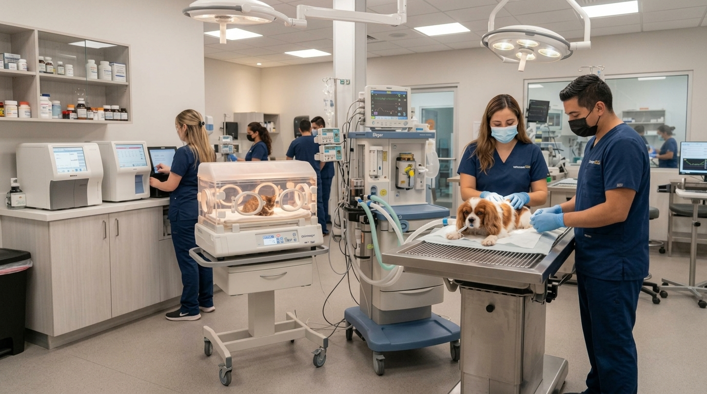
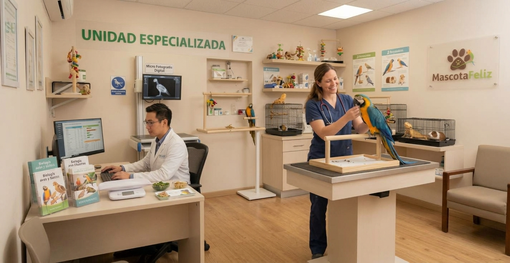
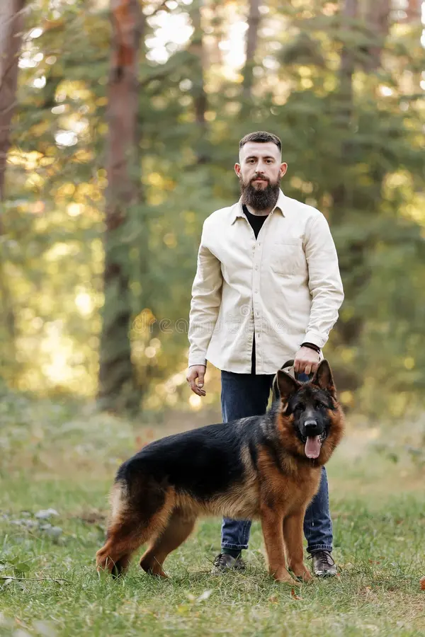

Ciencia con Empatía (Fear-Free)
Protocolos de manipulación dócil, feromonas sintéticas continuas, mantas pre-calentadas y salas de espera aisladas para que la consulta médica jamás sea una experiencia traumática.
Nacimos con el firme propósito de transformar la experiencia veterinaria tradicional en un espacio libre de estrés (Fear-Free), adaptado meticulosamente a las necesidades etológicas y fisiológicas de perros, gatos y aves exóticas.

No tratamos animales en serie. Diseñamos entornos clínicos basados en el rigor científico, el confort sensorial y la ética médica sin concesiones.
Protocolos de manipulación dócil, feromonas sintéticas continuas, mantas pre-calentadas y salas de espera aisladas para que la consulta médica jamás sea una experiencia traumática.
Salas y quirófanos diferenciados: sabemos que un loro amazónico o un gato sénior tienen respuestas etológicas y farmacológicas diametralmente distintas a las de un perro.
Sin pruebas innecesarias ni tarifas ocultas. Explicamos cada analítica, diagnóstico por imagen y pronóstico con diapositivas y lenguaje comprensible antes de actuar.
Equipo médico y de enfermería de guardia física los 365 días del año en nuestro Hospital Central, con monitorización continua en tiempo real y UCI especializada.
Centros especializados interconectados mediante historial clínico digital compartido para asegurar el seguimiento integral de tu mascota.

Lima📍 Av. Principal de las Mascotas 42, 28036 Lima
Instalaciones destacadas:

El Rescate📍 Calle del Rescate 15, 28028 Lima
Unidades de alta complejidad:

Dr. Fleming📍 C/ Doctor Fleming 12, 28036 Lima
Capacidades únicas:
Detrás de cada estadística hay un vínculo único. Estas son algunas de las familias que confían en nuestro compromiso diario.
"Kiko dejó de comer y tenía dificultades respiratorias severas. Casi ninguna clínica atiende aves con seriedad. El Dr. Mateo no solo lo estabilizó en su incubadora con nebulizaciones, sino que nos explicó cada paso. Hoy Kiko canta como siempre."

"Llevar a Luna al veterinario solía ser una pesadilla de bufidos y pánico. En MascotaFeliz entras a la sala de gatos sin olor a perro, con toallas impregnadas de feromonas y la Dra. Clara la examinó sin agarrarla bruscamente. Nunca más cambio de clínica."

"Un domingo a las 3:00 AM Thor empezó con distensión abdominal aguda por torsión gástrica. Llegamos a la sede de El Rescate y en menos de 10 minutos estaba en quirófano. La rapidez del equipo de urgencias fue la diferencia entre la vida y la muerte."
